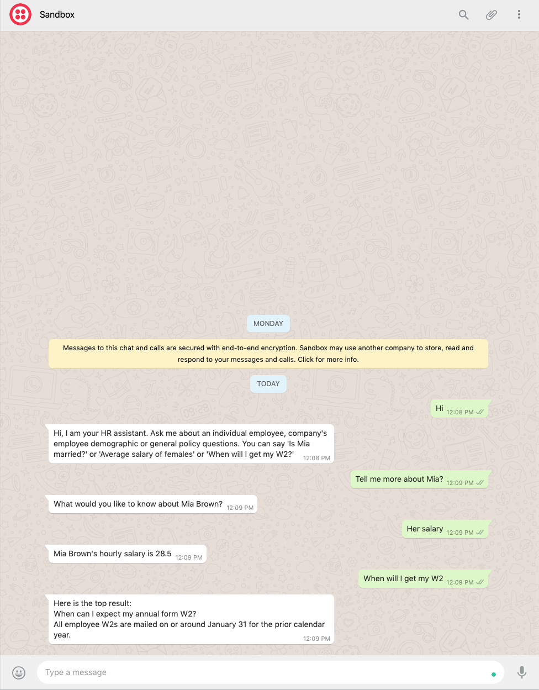

WhatsApp Integration¶
A conversational app built using MindMeld can be integrated seamlessly with WhatsApp through the Twilio sandbox. In this tutorial, you will create a WhatsApp bot based on the Human Resource blueprint. The HR assistant app is an example of a deep-domain conversational agent that uses a knowledge base of human resources and policies to understand complex user queries that reference employees within a company.
Note
Please make sure to install the Twilio dependency by running in the shell: pip install mindmeld[bot]. You also need to register a sandbox account with Twilio.
Quick Start¶
In this quick start guide, you will use a Twilio sandbox and ngrok to integrate the human resource application to WhatsApp. By setting up a publicly accessible server, one can register the server’s IP address to the Twilio developer sandbox, thereby allowing WhatsApp to send messages to the human resource application through a phone number registered with the sandbox. This guide should take between five and fifteen minutes to complete.
1. Register a sandbox¶
Login or create a new Twilio account.
Next, make sure you register the sandbox and confirm it on WhatsApp.
2. Building the bot¶
First, you need to install the specific dependencies for bot integration.
pip install mindmeld[bot]
After that you can instantiate a WhatsappBotServer instance. A sample implementation is provided in the HR blueprint.
mindmeld blueprint hr_assistant
After downloading the HR blueprint, you can inspect the implementation in whatsapp_bot_server.py.
import logging
from flask import Flask, request
from twilio.twiml.messaging_response import MessagingResponse
from mindmeld.components import NaturalLanguageProcessor
from mindmeld.components.dialogue import Conversation
from mindmeld import configure_logs
class WhatsappBotServer:
"""
A sample server class for Whatsapp integration with any MindMeld application
"""
def __init__(self, name, app_path, nlp=None):
"""
Args:
name (str): The name of the server.
app_path (str): The path of the MindMeld application.
nlp (NaturalLanguageProcessor): MindMeld NLP component, will try to load from app path
if None.
"""
self.app = Flask(name)
if not nlp:
self.nlp = NaturalLanguageProcessor(app_path)
self.nlp.load()
else:
self.nlp = nlp
self.conv = Conversation(nlp=self.nlp, app_path=app_path)
self.logger = logging.getLogger(__name__)
@self.app.route("/", methods=["POST"])
def handle_message(): # pylint: disable=unused-variable
incoming_msg = request.values.get('Body', '').lower()
resp = MessagingResponse()
msg = resp.message()
response_text = self.conv.say(incoming_msg)[0]
msg.body(response_text)
return str(resp)
def run(self, host="localhost", port=7150):
self.app.run(host=host, port=port)
if __name__ == '__main__':
app = Flask(__name__)
configure_logs()
server = WhatsappBotServer(name='whatsapp', app_path='.')
port_number = 8080
print('Running server on port {}...'.format(port_number))
server.run(host='localhost', port=port_number)
3. Start the HR assistant app server¶
Set the following environment variables and start the Flask server.
python -m hr_assistant build
cd hr_assistant
python whatsapp_bot_server.py
4. Test the integration¶
Start the ngrok channel. You can download the ngrok application from the Internet and then unzip it in a safe location.
./ngrok http 8080
Session Status online
Session Expires 7 hours, 59 minutes
Update update available (version 2.3.35, Ctrl-U to update)
Version 2.3.29
Region United States (us)
Web Interface http://127.0.0.1:4041
Forwarding http://be84be34.ngrok.io -> http://localhost:8080
Forwarding https://be84be34.ngrok.io -> http://localhost:8080
Connections ttl opn rt1 rt5 p50 p90
0 0 0.00 0.00 0.00 0.00
After running the ngrok application, copy the ngrok URL and paste into the Twilio sandbox’s configuration.

Now you can converse with HR assistant on WhatsApp!
{kind=link}